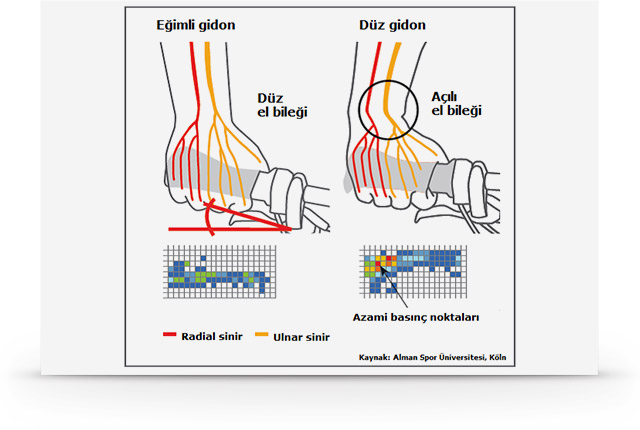

Gidon Nedir?
Vücudunuzun bisikletle temas ettiği üç nokta vardır: Sele, pedallar ve gidon. Bisikletiniz üzerinde geçirdiğiniz saatler boyunca el, kollar ve sırtınızın rahat etmesi, ağrımaması, uyuşmaması ve karıncalanmaması çok önemlidir.Bisiklet üzerinde rahatlığınızı belirleyen önemli noktalardan biri gidon tipi ve onun pozisyonudur. Tur için düz bir gidon tavsiye etmiyoruz: Düz gidon ellerinizin doğal duruş pozisyonunu bozarak ağrıya neden olur.

Gidonunuzun farklı pozisyonlarda tutuşa izin vermesi önemlidir. Uygun gidon ve elcikler ile size göre ölçülmüş ve ayarlanmış oturma pozisyonu, ellerinizdeki/kollarınızdaki karıncalanma ile omuz/sırtlardaki ağrıyı önler.
Tur gidonlarının hafif eğimli (trekking/riser modeli) olması kol ve bileklerinizdeki ağrıyı engelleyeceğinden önemlidir. Şehir bisikletleri için ise size daha dik bir sürüş pozisyonu sağlayan biraz daha eğimli bir gidon olabilir. Ayrıca turcuların çokça kullandığı kelebek gidon vardır ki tutuş pozisyonunuzu çeşitlendirmesi açısından en çok seçeneği veren gidon tipidir. Trekking gidonunuz varsa boynuzlarla daha çok tutuş seçeneği elde edebilirsiniz Bakınız: Elcikler).

Gidon Boğazı
Bisiklet üzerinde doğru sürüş pozisyonu için gidon kadar, gidon boğazı seçimi de önemlidir. Uygun gidon ve gidon boğazı, size gidon yüksekliğini ve gidon-sele arasındaki mesafeyi ayarlama imkanı verir. Ayarlanabilir gidon boğazı tavsiye ediyoruz, böylece sürüş tekniğiniz geliştikçe size tam uygun ayarı bulup pozisyonunuzu düzenleyebilirsiniz.
Bisikletinizdeki gidon boğazını seviyor ve değiştirmek istemiyorsanız ama pozisyonunuzdan da memnun değilseniz, gidon boğazı yükseltici ile gidonunuzu daha yukarı alabilirsiniz.

Tur bisikletlerinde 25,4 mm çapında gidon ve gidon boğazları kullanılır. Gidonunuz, başka bir ölçüdeyse (oversize) gidon ve gidon boğazınızı beraber değiştirerek pozisyonunuzu ayarlayabiliriz.
Elcik
Elleriniz gidona iyi oturmazsa, parmaklarınzıda ve avuç içinizde karıncalanma hissedebilirsiniz. Ele giden medyan sinirin el bileğindeki karpal tünelden geçerken çevre kılıf tarafından sıkışması sonucu bu rahatsızlık meydana gelir. Karpal tünel (carpal tunnel) sendromu denilen bu rahatsızlık kroniklerşirse ameliyat bile gerektirebilir. Araştırmalar, kadınların bu konuda erkeklere gore daha çok acı çektiklerini gösteriyor.
Bunu önlemek için yardımcı olabiliriz. Ergon tarafından üretilen özel ergonomik elcikler ile eliniz hem düz bir şekilde gidonu tutabilir, hem de daha geniş bir temas yüzeyi ile elinize gelen basıncı azaltır.

Ergon’dan amacınıza ve tercihinize göre farklı elcik tipleri vardır: Ergon GP1 boynuzsuz, Ergon GP3 orta boynuzlu ve Ergon GP5 büyük boynuzlu olarak ve Rohloff gibi sistemler için.


ölçülerinizi alırken farklı gidonlar deneyebilirsiniz. Şunlara bakılır:
- Gidon yüksekliği
- Gidon ve sele arasındaki mesafe
- Gidonun geometrisi ve genişliği
Genel bakım sırasında da yukarıdaki maddelerin hepsini kontrol ederek, gidonunuzu size göre ayarlanır.